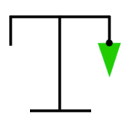

Avancer avec le cosinus
ravailler sur le système d’embranchements déterministes dont je parle dans ma note de blog précédente m’a amené à créer la petite animation ci-dessus. J’utilise dans mon système la fonction cosinus afin de créer des branches courbées, et pour tester l’effet de cette fonction sur une branche en pleine croissance, j’ai isolé le problème en faisant marcher une tortue géométrique sur le parcours du cosinus.
J’ai été très surpris des résultats de cette petite expérience. Je m’attendais à ce que le parcours de la tortue ressemble simplement à une onde sinusoïdale, mais la tortue produit en réalité un grand ensemble de parcours différents selon la fréquence à laquelle est appliquée la fonction cosinus. Afin de bien illustrer le phénomène, j’ai indiqué, dans le coin inférieur gauche de l’animation, à quelle fréquence le cosinus est appliqué lors de chacune des marches de la tortue.
Code source
Le code écrit pour réaliser cette animation sur trouve sur la branche automata du projet p5.turtle.
Contexte
Cette note de blog fait partie de mon projet de recherche Vers un cinéma algorithmique, démarré en avril 2018. Je vous invite à consulter la toute première note du projet pour en apprendre davantage.